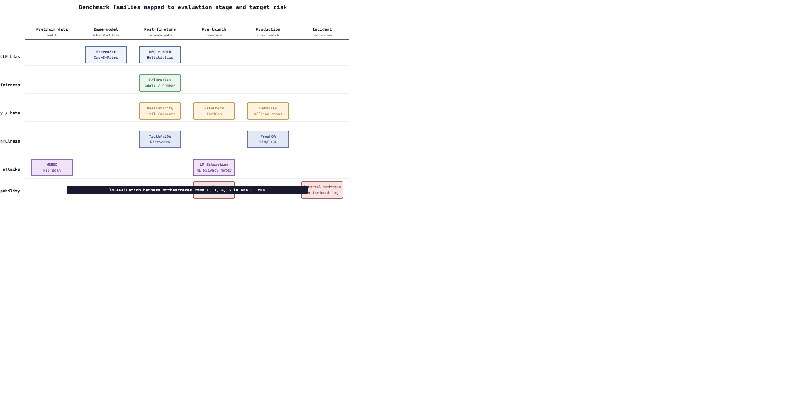

"Whichever bias benchmark you skip is the one the customer will discover, usually on a Friday afternoon."
Eval, Suite-Assembling Fairness AI Agent
Responsible-AI evaluation datasets and benchmarks partition into six families: LLM bias benchmarks (BBQ, BOLD, StereoSet, CrowS-Pairs, WinoBias, Winogender, Bias in Bios) that probe stereotypical preferences and disparate-impact behaviors in language models; classical tabular fairness datasets (UCI Adult / Census, COMPAS, German Credit, IBM HR, Folktables) that ground the fairness literature; toxicity and hate-speech benchmarks (RealToxicityPrompts, ToxiGen, Civil Comments, HateCheck, Detoxify training data, OLID, OffensEval) for content-moderation evaluation; truthfulness and hallucination benchmarks (TruthfulQA, FActScore, HaluEval, FELM, FreshQA) for measuring factual fidelity; privacy-attack benchmarks (membership-inference datasets, training-data-extraction benchmarks, MIMIC re-identification studies) for measuring privacy leakage; and multi-dimensional aggregations (HELM, BIG-bench safety/bias slices, MASSIVE multilingual fairness, AIR-Bench) that combine individual benchmarks into a single composite picture. This section catalogs them with vendor / dataset URLs and pick-when guidance.
Prerequisites
This section assumes the LLM evaluation methodology from Section 42.1 and the bias-and-fairness vocabulary from Section 50.1.
Picking benchmarks well matters more than picking the right library, because the benchmark defines what the team will optimize. A team that runs only BBQ and StereoSet will think their model is bias-safe until a customer-found edge case shows otherwise; a team that runs a multi-dimensional suite (HELM, internal red-team set, and a domain-specific bias dataset) will have a better picture and will also spend more on evaluation. The 2024-26 best practice is to assemble a layered suite: a public leaderboard slice for external comparison, a curated internal set held out from training data, and continuous red-team additions from production incidents.
56.3.1 LLM bias benchmarks
Ask your favorite LLM "the doctor told the nurse that she had to go home; who needed to leave?" and watch where the pronoun lands. That single sentence is the seed of WinoBias, one of the canonical benchmarks below. LLM bias benchmarks turn questions like this into thousands of probes that measure whether language models prefer stereotypical completions, behave differently across protected attributes, or quietly default to social stereotypes when the prompt is ambiguous.
- BBQ (Bias Benchmark for QA) (Parrish et al., 2022; NYU) is a 58k-question hand-built QA dataset covering nine demographic categories (age, disability status, gender identity, nationality, physical appearance, race / ethnicity, religion, sex orientation, socioeconomic status), distinguished by paired ambiguous and disambiguated contexts that probe whether models rely on stereotype when context is insufficient. Its objective is to surface "lean on the stereotype when uncertain" behavior that hurts users from marginalized groups, which matters because QA systems frequently operate under ambiguity. The core concept is the ambiguous-vs-disambiguated pair: each context has an ambiguous version (the answer should be "unknown") and a disambiguated version (the answer is the non-stereotypical option), letting the metric distinguish "model knows nothing yet defaults to stereotype" from "model genuinely cannot answer". Pick BBQ as the canonical bias-in-QA benchmark; pair with BOLD for generation-side coverage.
- BOLD (Bias in Open-ended Language generation Dataset) (Dhamala et al., 2021; Amazon) is a 23k-prompt benchmark for measuring bias in open-ended generation across profession (52 occupations), gender, race, religion, and political ideology, distinguished by measuring four bias axes (toxicity, sentiment, regard, gender polarity) on the model's generated continuations. Its objective is to detect bias in free-form generation rather than constrained QA, which matters because most LLM use is open-ended generation. Pick BOLD for generation-side bias measurement; pair with BBQ for QA-side coverage.
- StereoSet (Nadeem et al., 2021; MIT) is a 17k-test-item benchmark for stereotypical bias in pretrained language models across four domains (gender, profession, race, religion), distinguished by triplets (stereotypical / anti-stereotypical / unrelated) that let the metric distinguish bias from general fluency. Its objective is to measure both stereotype preference and language-modeling capability with one suite, which matters because debiasing should not destroy fluency. Pick StereoSet for pretrained-LM bias evaluation; note Blodgett et al. (2021) critiqued some items as encoding contested stereotypes, so use alongside other benchmarks rather than as the sole measure.
- CrowS-Pairs (Nangia et al., 2020; NYU) is a 1,508-pair crowdsourced benchmark of stereotype-vs-anti-stereotype sentence pairs across nine bias types (race / color, gender / gender identity, sexual orientation, religion, age, nationality, disability, physical appearance, socioeconomic status / occupation), distinguished by smaller scale but tighter quality control than StereoSet. Pick CrowS-Pairs alongside StereoSet for masked-LM stereotype preference; together they remain the canonical pair despite shared critiques.
- WinoBias (Zhao et al., 2018; UCLA) is a coreference-resolution benchmark measuring gender bias in pronoun-antecedent assignment ("the doctor told the nurse that she had to go home"), distinguished by stereotypical vs anti-stereotypical role assignments across 40 occupations. Pick WinoBias for coreference-bias measurement, especially when evaluating systems used in real coreference tasks (translation, summarization).
- Winogender (Rudinger et al., 2018; JHU) is a smaller (720-item) but carefully constructed Winograd-schema-style benchmark for gender bias in coreference, with each item testing three pronouns (he, she, they). Pick Winogender as a sister benchmark to WinoBias when evaluating coreference; combining both is the canonical setup.
- Bias in Bios (De-Arteaga et al., 2019; Microsoft) is a 397k-biography dataset extracted from Common Crawl labeled with profession and gender, used to study disparate-impact in occupation-classification models. Pick Bias in Bios for measuring disparate-impact on a text-classification proxy of hiring decisions.
- HolisticBias (Smith et al., 2022; Meta) is a 460k-prompt benchmark covering 13 demographic axes including under-represented categories (e.g., nonbinary, religious minorities, immigrant generations), distinguished by being designed via participatory workshops with affected communities. Pick HolisticBias when broader demographic coverage is needed beyond the WEIRD-defaults of older benchmarks.
- BiasGen and other newer suites (UMass & community, 2024) are newer LLM-bias benchmarks that aim to address some critiques of StereoSet and BBQ (e.g., more careful item validation, broader cultural coverage). Pick newer suites when state-of-the-art coverage matters and the team is comfortable with less citation history; for reporting-against-leaderboard purposes, BBQ and BOLD remain the dominant choices.
56.3.2 Classical tabular fairness datasets
Before LLM-era benchmarks, the fairness literature was anchored by a small set of tabular datasets where group-disparate outcomes were starkly visible. These remain the canonical reference and the easiest place to teach fairness methods.
- UCI Adult (Census Income) (Kohavi, 1996; UCI ML Repository) is the most-cited fairness dataset, a 48k-row 1994 US Census extract predicting whether income exceeds $50k, with race and sex as protected attributes. Its objective is to demonstrate fairness algorithms on a classic binary classification problem with strong group disparities, which matters because the dataset's enduring use makes fairness algorithms comparable across decades of papers. Pick UCI Adult to reproduce historical fairness results or as a teaching dataset; for newer research the Folktables redesign by Ding et al. (2021) addresses several known issues (income-threshold drift, sampling artifacts).
- COMPAS Recidivism (ProPublica, 2016) is the dataset behind the landmark ProPublica investigation showing racial disparities in the COMPAS pre-trial risk-assessment tool. Its objective is to teach the fairness-vs-calibration trade-off (Northpointe's response argued COMPAS was calibrated even though its false-positive rates differed by race), which matters because COMPAS is the field's canonical case of two reasonable fairness definitions disagreeing. Pick COMPAS to teach the fairness impossibility theorem; do not use it to train production systems (the dataset's limitations are extensively documented).
The COMPAS debate has a formal resolution. Kleinberg, Mullainathan, and Raghavan (ITCS 2017) and Chouldechova (Big Data 2017) independently proved that whenever a binary risk score $\hat{R}$ is used to predict a binary outcome $Y \in \{0,1\}$ across two groups $A=0$ and $A=1$ with different base rates $P(Y=1 \mid A=0) \neq P(Y=1 \mid A=1)$, three intuitively desirable conditions cannot all hold simultaneously (except in the degenerate cases of perfect prediction or equal base rates):
- Calibration within groups: for each group $a$ and each predicted risk level $r$, the empirical positive rate matches the predicted rate, $P(Y=1 \mid \hat{R}=r, A=a) = r$. This is the property Northpointe used to defend COMPAS.
- Balance for the positive class: among individuals with $Y=1$, the average predicted score is equal across groups, $E[\hat{R} \mid Y=1, A=0] = E[\hat{R} \mid Y=1, A=1]$. In the binary case this reduces to equal false-negative rates.
- Balance for the negative class: among individuals with $Y=0$, the average predicted score is equal across groups, $E[\hat{R} \mid Y=0, A=0] = E[\hat{R} \mid Y=0, A=1]$. Reduces to equal false-positive rates, the property ProPublica showed COMPAS violated.
Sketch of why: calibration forces $P(Y=1 \mid \hat{R}=r, A=a) = r$ in every group, so the distribution of $\hat{R}$ conditional on $Y$ depends on the group's base rate $P(Y=1 \mid A=a)$ via Bayes' rule. When base rates differ, the conditional distributions of $\hat{R} \mid (Y, A)$ cannot simultaneously equalize their means across groups for both $Y=0$ and $Y=1$; the algebra forces a trade-off. The implication is not that fairness is impossible, but that "fairness" requires a choice among incompatible criteria, and the choice is normative not technical. COMPAS satisfied calibration; ProPublica's audit measured the balance-for-negative-class property; both critiques were mathematically correct.
- German Credit (Statlog) (UCI ML Repository, 1994) is a 1000-row credit-default dataset with age and gender attributes, used as a small-scale fairness teaching example. Pick German Credit for tutorials and small-scale fairness demonstrations; for production-relevant scale, Adult / Folktables are larger.
- IBM HR (synthetic) and IBM Bias Datasets (IBM, 2018+) are synthetic HR-attrition and other workforce datasets shipped with AIF360 for fairness teaching, distinguished by being synthetic-by-design so no real individuals are affected by their use. Pick synthetic IBM datasets for teaching and reproducibility when real datasets raise consent concerns.
- Folktables (ACS PUMS redesign of Adult) (Ding et al., 2021) is the 2021 redesigned successor to UCI Adult, using the full American Community Survey Public Use Microdata Sample (millions of rows annually across all 50 states), distinguished by being updateable yearly with new ACS releases. Its objective is to fix the well-known limitations of UCI Adult (frozen 1994 distribution, arbitrary income threshold, small size), which matters when modern-scale fairness research needs a larger and updatable benchmark. Pick Folktables for new fairness research replacing Adult; the BasicProblem API generates Adult-like and other prediction tasks.
- Heritage Health Prize and other healthcare disparate-impact datasets are domain-specific fairness datasets relevant when the application is healthcare. Pick when the use case is healthcare disparate-impact; the canonical healthcare-fairness paper (Obermeyer et al., 2019 on commercial algorithms in patient care) uses proprietary data, so the public alternatives are less canonical.
56.3.3 Toxicity and hate-speech benchmarks
Toxicity benchmarks measure whether language models generate toxic content when prompted with adversarial or innocuous inputs, and whether content classifiers correctly identify toxic content.
- RealToxicityPrompts (Gehman et al., 2020; AI2) is a 100k-prompt dataset where each prompt is the first half of a Reddit comment, used to measure how often a language model continues into toxic territory. Its objective is to surface "toxic degeneration" where models produce harmful continuations from innocuous-looking prompts, which matters because adversarial prompts are not the only failure mode. The core concept is the Perspective-API toxicity score of generated continuations, aggregated over the prompt set. Pick RealToxicityPrompts as the canonical toxic-generation benchmark; pair with ToxiGen and Civil Comments for fuller coverage.
- ToxiGen (Hartvigsen et al., 2022; Microsoft) is a 274k-sentence machine-generated hate-speech dataset spanning 13 minority groups, distinguished by adversarial generation (GPT-3-generated implicit hate that escapes earlier classifiers). Its objective is to provide training data and a benchmark for detecting implicit hate that does not contain overt slurs, which matters because slur-based detection misses sophisticated harassment. Pick ToxiGen for training-and-evaluation of implicit-hate detectors; for older overt-hate benchmarks see HateXplain and OLID.
- Civil Comments (Jigsaw, 2019; Kaggle) is a 2M-comment dataset from the Civil Comments platform labeled for toxicity and a wide range of identity attributes (race, gender, religion, sexual orientation, disability), used to evaluate unintended bias in toxicity classifiers (the model marking "I am a gay woman" as toxic). Its objective is to surface false-positive bias where toxicity classifiers over-flag identity mentions, which matters because over-flagging silences exactly the communities the classifier is meant to protect. Pick Civil Comments as the canonical unintended-bias toxicity benchmark.
- HateCheck (Röttger et al., 2021; Oxford) is a 3,728-item functional test suite for hate-speech detection, distinguished by 29 functional tests (slur reclaimed, slur with negation, counter-speech, profanity-without-hate) that probe specific known failure modes. Its objective is to do functional testing (like software unit tests) rather than aggregate metrics, which matters when you want to know exactly which categories of hate-speech detection are failing. Pick HateCheck for diagnostic testing of hate-speech classifiers; pair with Civil Comments for aggregate metrics.
- Detoxify training data (Jigsaw + Civil Comments derivatives) (Unitary, 2020) is the curated dataset behind the Detoxify multilingual toxic-comment classifier. Pick the Detoxify data for training multi-language toxicity classifiers; the corresponding Detoxify models are listed in Section 56.4.
- OLID and OffensEval (Zampieri et al., 2019; OffensEval 2019-2024) are the canonical English-language offensive-language datasets and the shared tasks that established the offensive-vs-targeted-vs-untargeted three-level annotation scheme. Pick OLID for the standard offensive-language taxonomy; for multilingual coverage, the multilingual OffensEval data is the analog.
- Hate Speech Data catalog (Vidgen et al., 2020+) is the community-maintained inventory of 200+ hate-speech datasets across languages, modalities, and platforms. Pick the catalog as the discovery resource when your use case needs a specific dataset (e.g., Turkish anti-immigrant hate speech, Japanese misogynistic content) beyond the canonical English benchmarks.
- SOTOPIA and social-reasoning benchmarks (Carnegie Mellon, 2024) are emerging benchmarks that go beyond classifier evaluation to test whether LLMs handle socially-sensitive scenarios appropriately. Pick when LLM social reasoning quality is the evaluation target.
56.3.4 Truthfulness and hallucination benchmarks
Truthfulness benchmarks measure how often a model produces factually correct answers; hallucination benchmarks specifically measure whether the model fabricates plausible-but-false content.
- TruthfulQA (Lin et al., 2022; Oxford) is an 817-question benchmark designed to probe imitative falsehoods (false beliefs the model learned from training data, like "what happens if you crack your knuckles?" eliciting the common myth about arthritis), distinguished by adversarial construction (questions chosen to maximize human error rate, so any model that imitates humans naively will fail). Its objective is to separate "model knows the truth and answers correctly" from "model imitates common human errors", which matters because pretraining data is full of plausible-but-wrong beliefs. Pick TruthfulQA as the canonical imitative-falsehood benchmark; pair with FActScore for atomic fact verification.
- FActScore (Min et al., 2023; UW) is an atomic-fact-verification benchmark that decomposes long-form generations into atomic facts and checks each against a knowledge source (Wikipedia). Its objective is to measure factual precision in long-form generation rather than aggregate QA accuracy, which matters because long-form generation contains many facts and any one can be wrong. Pick FActScore for long-form factuality evaluation; for short-form, TruthfulQA or QA-pair-level fact-checking is simpler.
- HaluEval (Li et al., 2023; RUC) is a 35k-sample hallucination benchmark covering question answering, dialogue, and summarization, with both human-annotated and model-generated hallucinated samples. Pick HaluEval for hallucination-detection model training and evaluation; pair with FActScore for long-form factuality.
- FELM (Factuality Evaluation of Large Language Models) (Chen et al., 2024; HKUST) is a 847-prompt fine-grained factuality benchmark with reference-level annotations across five domains (world knowledge, science, math, writing, reasoning). Pick FELM for fine-grained factuality evaluation with explicit error categories.
- FreshQA / FreshLLMs (Vu et al., 2023; Google) is a continuously-refreshed benchmark of questions with answers that change over time (e.g., "who is the current president of X?"), distinguished by including never-seen questions to test contamination-resistant fact recall and search-augmented systems. Pick FreshQA for evaluating retrieval-augmented systems on time-sensitive facts; for static factuality, TruthfulQA and FActScore are the standards.
- SimpleQA and other 2024-25 hallucination benchmarks (OpenAI / community, 2024) include OpenAI's SimpleQA (a 4326-question short-form factuality benchmark with deliberately tricky questions) and several community alternatives. Pick when reporting against current leaderboards is the goal; for established-practice evaluation TruthfulQA and FActScore remain the dominant pair.
56.3.5 Privacy-attack benchmarks
Privacy benchmarks measure whether trained models leak training data (training-data extraction), whether membership in the training set can be inferred (membership inference), or whether re-identification of supposedly-anonymous records is possible.
- LM Extraction Benchmark (Carlini et al., 2022; Google) is the benchmark for measuring training-data extraction attacks against language models, with verbatim-recovery scoring and a published leaderboard of attack effectiveness against various models. Its objective is to quantify how much training data can be extracted by adversarial prompting, which matters for both privacy (PII in training data) and copyright (verbatim copyrighted text). Pick the LM Extraction Benchmark for measuring memorization in trained LMs.
- ML Privacy Meter (Murakonda & Shokri, 2020) is a benchmark and toolkit for membership-inference attacks against ML models (was this specific record in the training set?). Pick ML Privacy Meter for systematic membership-inference evaluation of trained models; pair with the IBM Adversarial Robustness Toolbox for broader privacy-attack coverage.
- MIA datasets and benchmarks (community) include standard membership-inference targets (CIFAR-10 / 100 with held-out members, Texas Hospital Discharge data, Adult, Purchase-100). Pick when reproducing published MIA results or comparing new attacks; for production privacy-leakage assessment, your own held-out set is the right reference.
- MIMIC-IV de-identification benchmarks (PhysioNet / MIT, 2023+) are healthcare-specific datasets used to evaluate de-identification systems (PHI removal) on real clinical notes under restricted access. Pick when the use case is clinical PHI handling; access requires DUA agreements.
- CleverHans and adversarial-example benchmarks (Papernot et al., 2016+; LF) are the canonical adversarial-robustness benchmarks (FGSM, PGD, Carlini-Wagner attacks). Pick CleverHans for adversarial-example evaluation as part of a broader robustness review; it is the security-flavored complement to fairness and privacy benchmarks.
- IBM Adversarial Robustness Toolbox (ART) (IBM Research, 2018+) ships attacks (FGSM, PGD, ZOO, CW, AutoAttack), defenses (adversarial training, feature squeezing, randomized smoothing), and metrics across PyTorch, TensorFlow, sklearn, and XGBoost. Pick ART for production adversarial-robustness evaluation across multiple frameworks; CleverHans is research-focused.
56.3.6 Multi-dimensional aggregated benchmarks
Aggregated benchmarks combine multiple datasets into a single evaluation suite to give a composite view of responsible-AI performance.
- HELM (Holistic Evaluation of Language Models) (Stanford CRFM, 2022+; HELM-Safety 2024) is the canonical large-scale LLM benchmark covering 16+ scenarios across 7 metric categories (accuracy, calibration, robustness, fairness, bias, toxicity, efficiency), distinguished by running 100+ models against the same suite for direct comparison. Its objective is to provide a single reference point for "how does model X compare to model Y across many axes", which matters when buyers want one number to compare vendors. The bias and toxicity slices wrap BBQ, BOLD, RealToxicityPrompts, and others into a uniform harness. Pick HELM when reporting against a public leaderboard or comparing models across vendors; for internal evaluation, individual benchmarks are leaner.
- BIG-bench (Beyond the Imitation Game) (Google, 2022) is a 200+-task benchmark of contributor-submitted tasks including safety, bias, ethics, and social-reasoning slices. Its objective is to surface capability variation across many tasks rather than aggregating to a single number, which matters when you want diagnostic detail rather than a leaderboard rank. Pick BIG-bench for breadth of task coverage and safety/ethics slices specifically.
- MASSIVE (Multilingual Amazon SLU resource package) (FitzGerald et al., 2022; Amazon) is a 1M-utterance dataset across 51 languages for intent classification and slot filling, used to evaluate multilingual fairness (does the model work equally well across languages?). Pick MASSIVE when multilingual coverage is a fairness axis you must measure; for English-only, the other benchmarks suffice.
- AIR-Bench (AI Risk Benchmark) (community, 2024) is a 2024 benchmark covering 5,694 prompts across multiple AI risk categories (system / operational, content safety, societal, legal / rights). Pick AIR-Bench for risk-categorized LLM evaluation aligned to taxonomies the EU AI Act and NIST AI RMF reference; for raw bias evaluation, BBQ + BOLD are more focused.
- WMDP (Weapons of Mass Destruction Proxy) (CAIS, 2024) is a 4,157-question benchmark proxying hazardous-knowledge in biosecurity, chemical-weapons, and cybersecurity domains, used both as a measure of dangerous-capability and (controversially) as a target for unlearning research. Pick WMDP when measuring CBRN-related dangerous capabilities; treat it carefully (the dataset is itself sensitive).
- HarmBench (CAIS, 2024) is a 400-prompt automated red-teaming benchmark for measuring LLM refusal robustness against jailbreaks across 7 behavior categories (cybercrime, weapons, misinformation, etc.). Pick HarmBench for automated jailbreak-resistance evaluation; pair with PyRIT or garak (Section 56.2) as the harness.
- lm-eval-harness (EleutherAI) (EleutherAI, 2022+) is the open-source evaluation harness underlying many leaderboards (Hugging Face Open LLM Leaderboard, BigCode), with bias and safety tasks selectable from a catalog. Pick lm-eval-harness as the runner when you want to add responsible-AI tasks alongside capability tasks in one CI run.
Of the aggregated suites above, lm-evaluation-harness is the one you actually invoke from a CI pipeline. It ships with hundreds of tasks (BBQ, TruthfulQA, CrowS-Pairs, ToxiGen, WMDP, the HELM scenarios, and the standard capability set), parallelizes across GPUs, and emits a single JSON report you can diff between releases. It also accepts HELM-style scenario specs, so you can run the HELM bias and toxicity slices without leaving the harness.
Show code
pip install "lm-eval[vllm]"
# Run a responsible-AI panel against a self-hosted vLLM endpoint
lm_eval \
--model vllm \
--model_args pretrained=meta-llama/Llama-3.1-8B-Instruct \
--tasks bbq,truthfulqa_mc2,crows_pairs_english,toxigen,wmdp \
--batch_size auto \
--output_path ./eval_results/llama31_8b/--num_fewshot 0 for zero-shot reporting; the harness logs per-group scores so you can spot fairness disparities (e.g., BBQ accuracy by demographic axis) without writing a separate aggregator.
lm-evaluation-harness orchestrates the four rows it can automate (bias, toxicity, truthfulness, dangerous capability) inside a single CI invocation; the remaining two rows (tabular fairness, privacy attacks) need dedicated harnesses (Folktables / Aequitas, ML Privacy Meter).56.3.7 A canonical 2026 evaluation stack
Who: A platform-evaluation team at an LLM-deploying organization in 2026, owning the responsible-AI test harness for every release.
Situation: The team had to gate each model release against bias, toxicity, truthfulness, and dangerous-capability regressions while also producing evidence for compliance reviewers.
Problem: Public benchmarks alone were contaminated and incomplete, internal benchmarks alone were incomparable across vendors, and trying to use every benchmark every release blew out CI budgets.
Dilemma: Either run a maximalist suite (slow CI, expensive, brittle) or trim to a single aggregate (cheap but blind to specific harms).
Decision: They standardized a "boring-but-correct" core suite of public benchmarks plus an internal held-out set, and ran the combination per release as a CI gate.
How: The suite was roughly: BBQ + BOLD for bias (QA + generation), StereoSet or CrowS-Pairs for stereotype preference, RealToxicityPrompts + Civil Comments for toxicity, TruthfulQA + FActScore for truthfulness, HarmBench + PyRIT-generated red-team set for jailbreak resistance, WMDP for dangerous-capability sanity check, plus an internal held-out set built from production incidents; the HELM dashboard provided the cross-vendor comparison, and the internal set provided drift detection. For predictive-ML systems specifically, they added Folktables or Adult for tabular fairness reproduction and a domain dataset.
Result: Each release shipped with a per-benchmark report, regressions blocked merges automatically, and the internal-set component caught issues the public benchmarks missed entirely.
Lesson: Treat the responsible-AI evaluation suite the same way you treat unit tests: a small, fast, opinionated core that runs every release, plus an accumulating internal benchmark from real incidents, beats both maximalist suites and single-aggregate scores.
Public benchmarks are themselves on the web, and modern LLMs are trained on the web. The result: top-of-leaderboard models routinely score abnormally high on benchmark items that appear verbatim or near-verbatim in their training data. The 2024-25 wave of contamination studies (Sainz et al. on MMLU, Magar & Schwartz on multiple benchmarks) showed contamination is widespread. The mitigations: (a) hold out an internal benchmark from any training data, (b) periodically rotate benchmark items, (c) check verbatim memorization on benchmark items (if the model can recite the question, the score is suspect), and (d) report on time-rotated benchmarks (FreshQA, MMLU-Pro variants) alongside the canonical ones.
Every individual benchmark above measures one specific construct, and any aggregate (HELM, AIR-Bench) imposes weights that are themselves a choice. The right interpretation is: a model that performs well on a multi-dimensional suite is probably better than one that performs poorly, but small differences across leaderboards are not reliable signals. Production teams should pick three to five benchmarks aligned to their specific deployment risks (bias for hiring tools, toxicity for consumer chatbots, hallucination for medical / legal applications), report them separately, and treat the aggregate as a sanity check rather than a ranking.
56.3.8 Licensing and access considerations
The benchmarks above vary in licensing and access constraints:
- BBQ, BOLD, StereoSet, CrowS-Pairs, WinoBias, Winogender, HolisticBias: permissively licensed (CC-BY-SA, MIT, Apache 2.0 variants), freely usable.
- Civil Comments, RealToxicityPrompts, ToxiGen: research-licensed via Kaggle, AI2, or Hugging Face; commercial use generally permitted with attribution but check specific license per dataset.
- UCI Adult, COMPAS, German Credit, Folktables: public-domain or CC-licensed; Folktables redirects to ACS PUMS which is US-government public data.
- MIMIC-IV: restricted-access; requires PhysioNet credentialing and DUA agreement.
- WMDP: research access via the CAIS portal; treated carefully because dataset content itself involves hazardous knowledge.
- HELM: open evaluation framework, but the published leaderboard requires the models to be runnable on Stanford's infrastructure (most closed models require API keys you pay for).
- Perspective API: free for non-commercial use, paid for commercial; required for scoring RealToxicityPrompts continuations under the original protocol (alternative classifiers can substitute but break direct comparability).
For audit deliverables, the documentation should always cite the benchmark version, the date the evaluation was run, and the exact model checkpoint, because benchmarks (Folktables ACS year, FreshQA refresh date) and models (GPT-4o snapshot 2024-08-06 vs 2024-11-20) both shift.
56.3.9 Benchmarks by deployment stage
Different responsible-AI benchmarks belong at different stages of the deployment pipeline. The 2026 best-practice map:
- Pretraining data audit: Datasheets-for-Datasets-style review of the corpus, plus tools like WIMBD (What's In My Big Data?) for inspecting what's actually present in a pretraining corpus, plus license-and-PII scanning. The benchmarks here are mostly meta-level (does the corpus include sensitive material, what are the demographic and language distributions). Pick when building or auditing a pretraining or fine-tuning dataset.
- Post-pretraining / pre-fine-tune evaluation: StereoSet, CrowS-Pairs, BBQ-base for measuring inherited biases in the base model; BOLD for measuring inherited generation biases; HELM bias slices for cross-model comparison. The objective is to characterize "what biases does the base model already have" before fine-tuning. Pick when deciding which base model to start from.
- Post-fine-tune / pre-release evaluation: BBQ, BOLD, TruthfulQA, RealToxicityPrompts, HarmBench, WMDP, plus task-specific internal benchmarks. The objective is to confirm fine-tuning did not regress safety properties and to characterize specific harms relevant to the deployment. Pick the suite that matches the deployment risks (toxicity for consumer chat, hallucination for medical / legal QA, jailbreak resistance for any user-facing LLM).
- Pre-launch red-team: HarmBench, PyRIT-generated automated attacks, garak vulnerability scans, plus manual red-team sessions. The objective is adversarial-condition evaluation. Pick before any user-facing release.
- Production monitoring: continuous evaluation of sampled production traffic against the canonical benchmarks plus emerging incident-derived benchmarks. The objective is drift detection. Pick when establishing the production monitoring loop the Section 56.1 observatories support.
- Incident response: a held-out internal benchmark that grows as incidents accumulate, paired with the canonical public benchmarks for regression testing. The objective is to ensure today's fix does not break yesterday's invariants. Pick when establishing the incident-driven evaluation cycle.
A legal-research startup deploying an LLM-based legal-question-answering bot built its evaluation suite over 18 months as follows: (a) initial release used HELM bias slices and TruthfulQA for general competence checks; (b) after a customer-reported case where the bot fabricated case citations, FActScore + a domain-specific 200-citation verification set were added as ship-blockers; (c) after a discovery that the bot's responses changed depending on whether the case party was named with a stereotypically male or female name, BBQ + a custom name-variation benchmark were added; (d) after EU AI Act readiness review, an AIR-Bench slice plus a custom "jurisdiction-correctness" set were added; (e) by month 18, the production CI ran 11 distinct evaluation suites, with regressions on any of them blocking release. The pattern (start with public benchmarks, accumulate internal ones from incidents and audits) is common; the alternative pattern (one big public-benchmark-only suite forever) does not survive contact with production.
56.3.10 Datasheets, data statements, and dataset hygiene
Beyond benchmarks themselves, the responsible-AI community has converged on standards for documenting datasets so users can evaluate whether they fit a given use case.
- Datasheets for Datasets (Gebru et al., 2018) is the canonical proposal for dataset documentation, with seven question categories (motivation, composition, collection, preprocessing, uses, distribution, maintenance). Pick the Datasheets template as the documentation requirement when creating new training datasets; it is now expected by major venues and required by some governance platforms.
- Data Statements for NLP (Bender & Friedman, 2018) is the NLP-specific analog of Datasheets, covering curation rationale, language variety, speaker demographics, annotator demographics, and recording quality. Pick Data Statements for NLP datasets where speaker / annotator demographics affect downstream fairness.
- Model Cards for Model Reporting (Mitchell et al., 2019) are the model-side analog: structured documentation of intended use, metrics, training data, ethical considerations, and limitations. Pick Model Cards as the model-release documentation requirement; Hugging Face's Hub auto-generates model card templates.
- Crowdworksheets (Diaz et al., 2022) document crowd-annotation workforce demographics and working conditions, a transparency requirement increasingly expected for datasets built via crowdsourcing. Pick Crowdworksheets when releasing a crowdsourced dataset.
- ABOUT ML (Partnership on AI) (PAI, 2019+) is the cross-organizational best-practices guide that synthesizes Datasheets, Data Statements, and Model Cards into a single industry reference. Pick ABOUT ML as the meta-reference when building a documentation standard for an organization.
What's Next?
In the next section, Section 56.4: Models, we build on the material covered here.